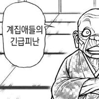

터져서 없어짐 수고 짤
저 뜻 : 새 함장 와서 배 떠나거나 전투중에 배 포기하고 가는거
방송하나로 배 버린사람 만들기ㅋㅋ
하함이라고 해야함
함장님 내리십니다!
함장님 튑니다!
해군이 아닌 출신들에게는 설명이 필요해요.
"이함"이라는 것은 전시에 배가 적의 공격으로 크게 망가졌을때 배를 버리고 떠날 때나, 전출갈 때와 같이 "다시 돌아오지 않는" 하함을 의미합니다. 평상시 출퇴근시에는 하함이라고 합니다

")
참고로 육상의 해군건물에서도 그 건물의 짱(!)이 입장하면 승함, 퇴장하면 하함이라고 한답니다. 요상하죠?
입갤 퇴갤과 마찬가지?
저런.. 해군 친구들! 해군 아닌 사람들에게는 저거를 방송해주는거부터 설명해줘야 할꺼예요.
근데 왜 함장만 교대하고 밑은 교대않헤줌?
군가처럼 나의 집은 [배]란다기때문
나의 집은 베란다
저러면 함장 바로 다이빙 해야함?
함장부터 시작해서 같은 중대개념이 아닌가???
대충 육군으로 설명하면
중대장이 부대 출근/퇴근하면 부대안에 중대장 출근했다/퇴근했다 하고 위병소에서 방송하는데 단어선택 찐빠낸거.
함 총원+함장본인+주변 다른부대까지 이새끼가 찐빠낸걸 듣는순간임
배를 버려라~~
솔직히 스타2 하면서 가장 깨는 대사였음
뭔 배틀크루저 이동하는데 계속 배를 버리래
뭐야 원균이잖아?
이~~~함
선장입수~
배를 배려라~
우리 배 하사가 함장 이! 함! 해서 존나 웃었었는데ㅋㅋ
김하사 잘 살고 있을라나...
조타장한테 엄청 깨졌겠네ㅋㅋ
갑판하사여서 갑판장한테 깨짐ㅋ
근데 워낙 성격 능글능글하고 성골 진고 출신이라서 별 문제 없었음
함장님 들으셨죠? (눈치)
바~~~~로 사관실에서 현문당직 누구야!!! 샤우팅 들린다
함장님께서 배를 버리셨다ㅠㅠㅠ
배를 버려라!